Prognoza bursztynu dla plaży
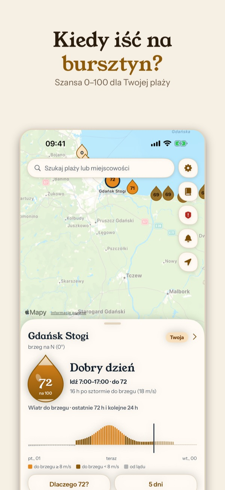
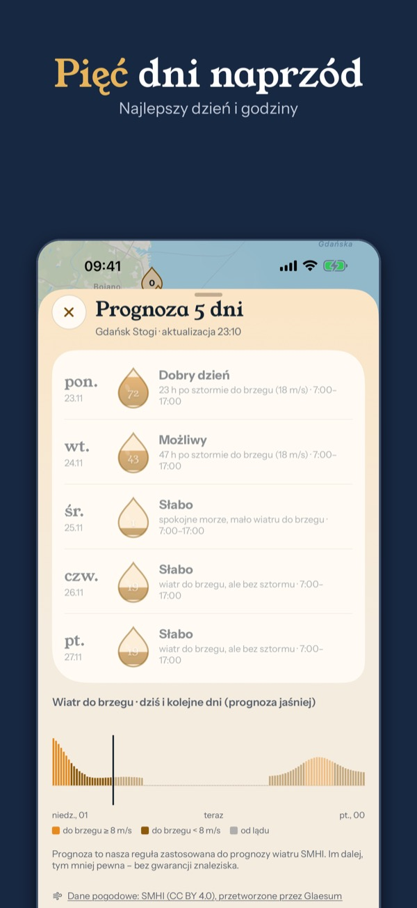
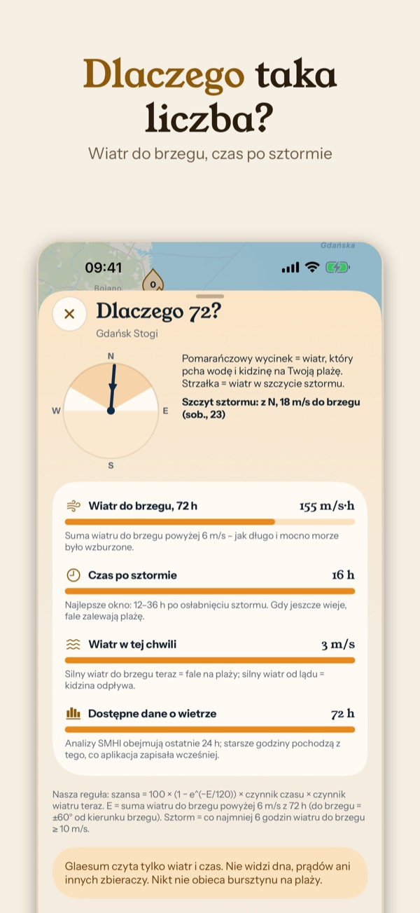
Glaesum pomaga zbieraczom bursztynu nad Bałtykiem i Morzem Północnym wybrać dobry dzień i dobrą plażę. Dla 120 plaż w Polsce, Niemczech, na Litwie, Łotwie, w Danii i Szwecji znamy kierunek brzegu. Z danych o wietrze z ostatnich godzin i prognozy liczymy, jak długo i jak mocno wiało do brzegu oraz ile godzin minęło od sztormu – i pokazujemy to jako kroplę bursztynu od 0 do 100.
• Szansa 0–100 dla Twojej plaży, dziś i do 5 dni naprzód • Pasek 72 godzin: przesuń palcem, by zobaczyć, kiedy wiało do brzegu • Najlepsze godziny dnia i „dlaczego” za liczbą • Obowiązkowa karta bezpieczeństwa: biały fosfor wygląda jak bursztyn • Test solanki i latarki UV krok po kroku • Lokalne powiadomienie wieczorem przed dobrym dniem • Prywatny dziennik znalezisk na urządzeniu: waga, wymiary, kolor, zdjęcie, warunki • Własne plaże z kierunkiem brzegu
Za darmo: dziś i jutro dla Twojej plaży, poradnik o białym fosforze, poradnik testów i 10 znalezisk w dzienniku. Glaesum Plus to jednorazowy zakup – bez subskrypcji: prognoza 5 dni dla wszystkich 120 plaż, powiadomienie o dobrym dniu, do 10 własnych plaż i dziennik bez limitu. Bez reklam, bez konta.
Dane o wietrze: otwarte dane SMHI (CC BY 4.0), przetworzone przez Glaesum. Szansa to szacunek na podstawie wiatru według naszej własnej reguły – nikt nie obieca znalezisk. Nigdy nie wkładaj znalezisk do kieszeni; podejrzane grudki mogą być białym fosforem. Lokalizacja tylko podczas korzystania z aplikacji.
Bernsteinsuche nach dem Sturm
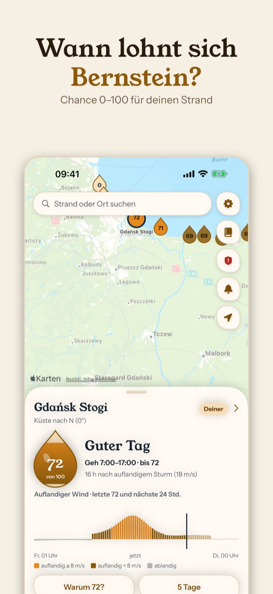
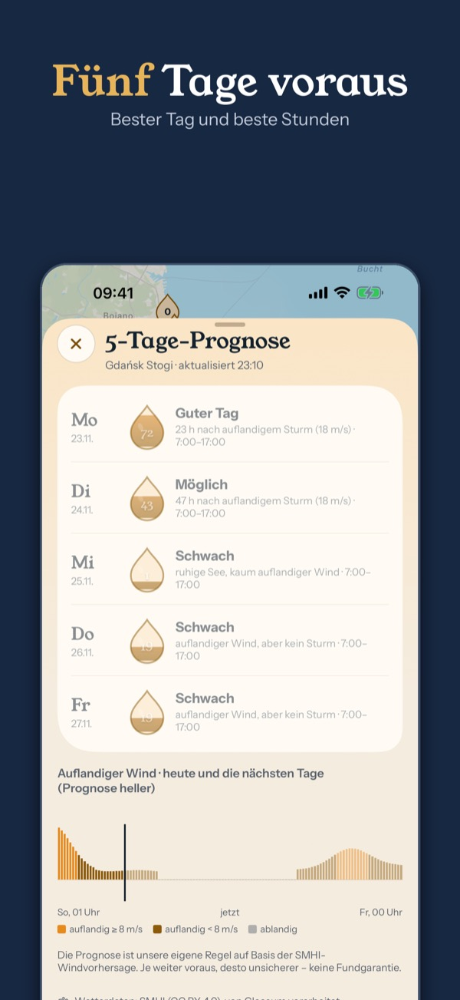
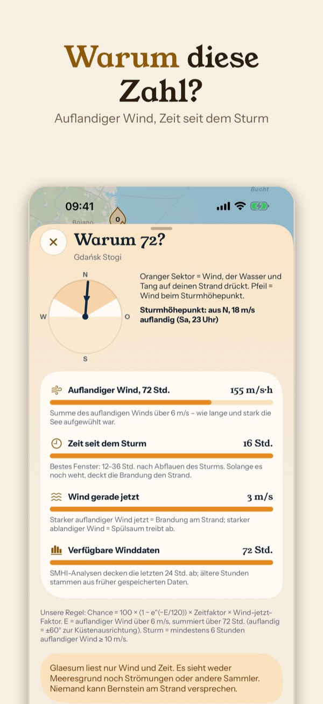
Glaesum hilft Bernsteinsammlern an Ostsee und Nordsee, den richtigen Tag und Strand zu finden. Für 120 Strände in Polen, Deutschland, Litauen, Lettland, Dänemark und Schweden kennen wir die Ausrichtung der Küste. Aus den Winddaten der letzten Stunden und der Vorhersage rechnen wir aus, wie lange und wie stark der Wind auflandig war und wie viele Stunden seit dem Sturm vergangen sind – als Bernsteintropfen von 0 bis 100.
• Chance 0–100 für deinen Strand, heute und bis zu 5 Tage • 72-Stunden-Streifen: wischen und sehen, wann der Wind auflandig war • Beste Stunden des Tages und das „Warum“ hinter der Zahl • Pflicht-Sicherheitskarte: Weißer Phosphor sieht aus wie Bernstein • Salzwasser- und UV-Lampen-Test Schritt für Schritt • Lokale Benachrichtigung am Vorabend eines guten Tages • Privates Fundbuch auf dem Gerät: Gewicht, Größe, Farbe, Foto, Bedingungen • Eigene Strände mit Küstenausrichtung
Kostenlos: heute und morgen für deinen Strand, der Phosphor-Ratgeber, die Test-Anleitung und 10 Funde im Fundbuch. Glaesum Plus ist ein Einmalkauf – kein Abo: 5-Tage-Prognose für alle 120 Strände, Gute-Tag-Benachrichtigung, bis zu 10 eigene Strände und ein Fundbuch ohne Limit. Keine Werbung, kein Konto.
Winddaten: offene Daten von SMHI (CC BY 4.0), von Glaesum verarbeitet. Die Chance ist eine Schätzung aus Winddaten nach unserer eigenen Regel – niemand kann Funde versprechen. Funde nie in die Hosentasche stecken; verdächtige Stücke können weißer Phosphor sein. Standort nur während der Nutzung.
Find rav efter stormen
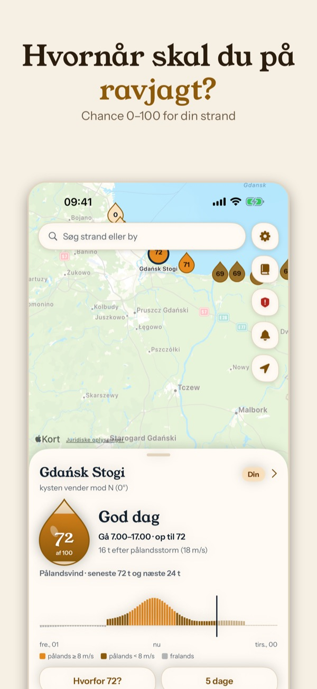
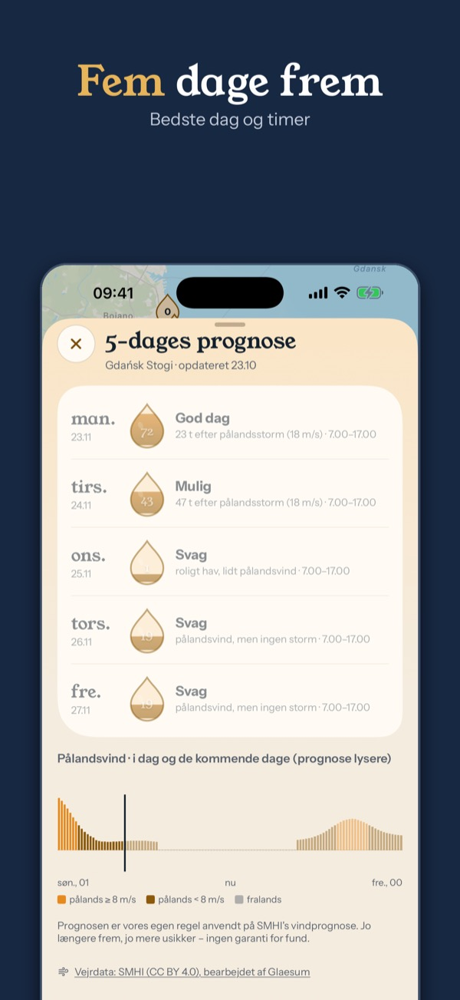
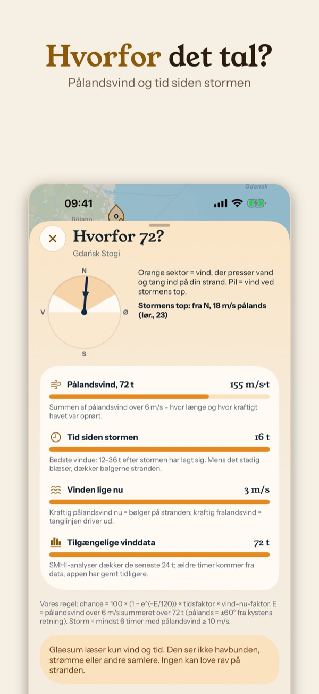
Glaesum hjælper ravsamlere ved Vestkysten og Østersøen med at vælge den rigtige dag og strand. For 120 strande i Danmark, Sverige, Tyskland, Polen, Litauen og Letland kender vi kystens retning. Ud fra vinddata for de seneste timer og prognosen beregner vi, hvor længe og hvor kraftigt det har blæst pålands, og hvor mange timer der er gået siden stormen – vist som en ravdråbe fra 0 til 100.
• Chance 0–100 for din strand, i dag og op til 5 dage frem • 72-timers strimmel: træk for at se, hvornår det blæste pålands • Dagens bedste timer og „hvorfor“ bag tallet • Obligatorisk sikkerhedskort: hvidt fosfor ligner rav • Saltvands- og UV-lygtetest trin for trin • Lokal notifikation aftenen før en god dag • Privat fundbog på enheden: vægt, størrelse, farve, foto, forhold • Egne strande med kystretning
Gratis: i dag og i morgen for din strand, fosforguiden, testguiden og 10 fund i fundbogen. Glaesum Plus er et engangskøb – intet abonnement: 5-dages prognose for alle 120 strande, notifikation om gode dage, op til 10 egne strande og en fundbog uden grænse. Ingen reklamer, ingen konto.
Vinddata: SMHI's åbne data (CC BY 4.0), bearbejdet af Glaesum. Chancen er et skøn ud fra vinddata efter vores egen regel – ingen kan love fund. Læg aldrig fund i lommen; mistænkelige klumper kan være hvidt fosfor. Placering kun mens du bruger appen.
Hitta bärnsten efter stormen
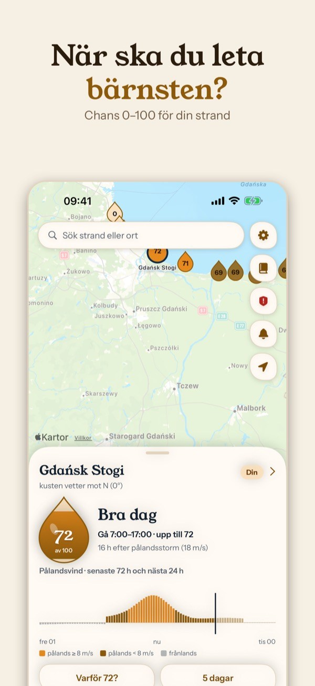
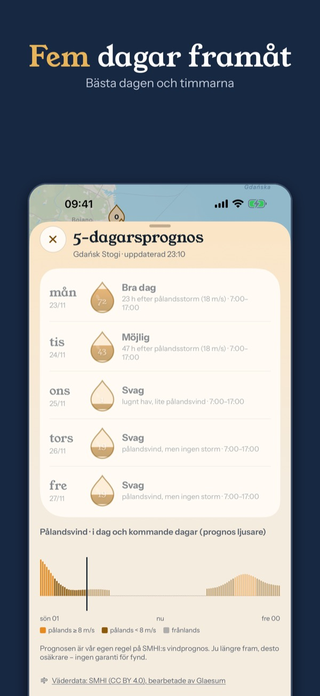
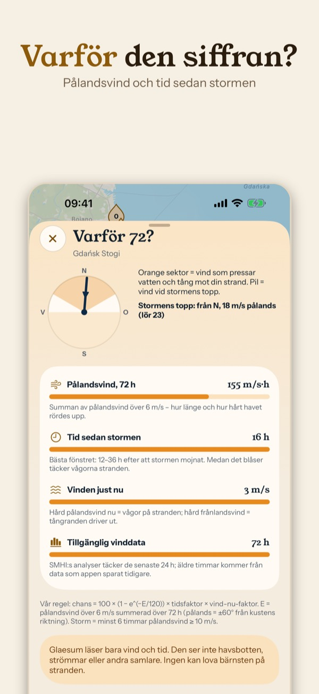
Glaesum hjälper bärnstenssamlare vid Östersjön och Nordsjön att välja rätt dag och strand. För 120 stränder i Sverige, Danmark, Tyskland, Polen, Litauen och Lettland känner vi kustens riktning. Med vinddata för de senaste timmarna och prognosen räknar vi ut hur länge och hur hårt det har blåst mot land och hur många timmar som gått sedan stormen – visat som en bärnstensdroppe från 0 till 100.
• Chans 0–100 för din strand, i dag och upp till 5 dagar framåt • 72-timmarsremsa: dra för att se när det blåste mot land • Dagens bästa timmar och ”varför” bakom siffran • Obligatoriskt säkerhetskort: vit fosfor liknar bärnsten • Saltvatten- och UV-lampstest steg för steg • Lokal notis kvällen före en bra dag • Privat fyndbok på enheten: vikt, storlek, färg, foto, förhållanden • Egna stränder med kustriktning
Gratis: i dag och i morgon för din strand, fosforguiden, testguiden och 10 fynd i fyndboken. Glaesum Plus är ett engångsköp – ingen prenumeration: 5-dagarsprognos för alla 120 stränder, notis om bra dagar, upp till 10 egna stränder och en fyndbok utan gräns. Ingen reklam, inget konto.
Vinddata: SMHI:s öppna data (CC BY 4.0), bearbetade av Glaesum. Chansen är en uppskattning från vinddata enligt vår egen regel – ingen kan lova fynd. Lägg aldrig fynd i fickan; misstänkta klumpar kan vara vit fosfor. Plats bara medan du använder appen.
Baltic amber after the storm
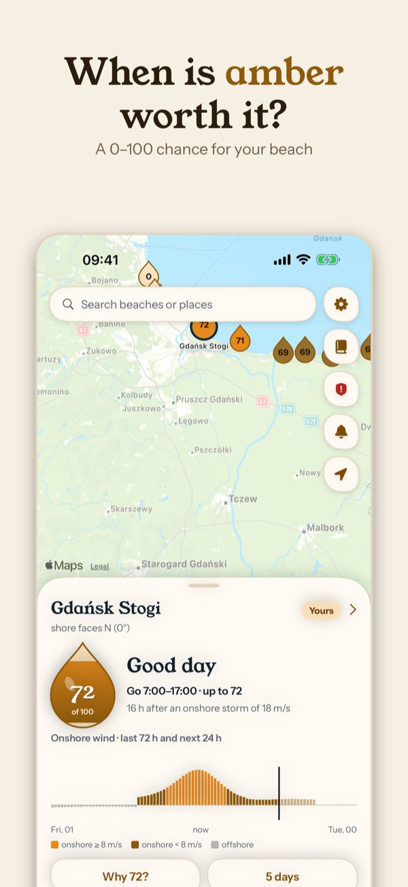
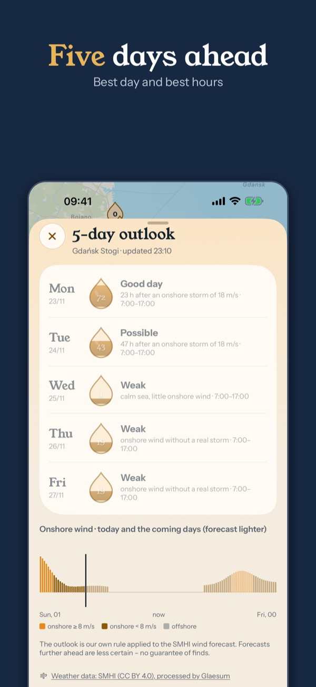
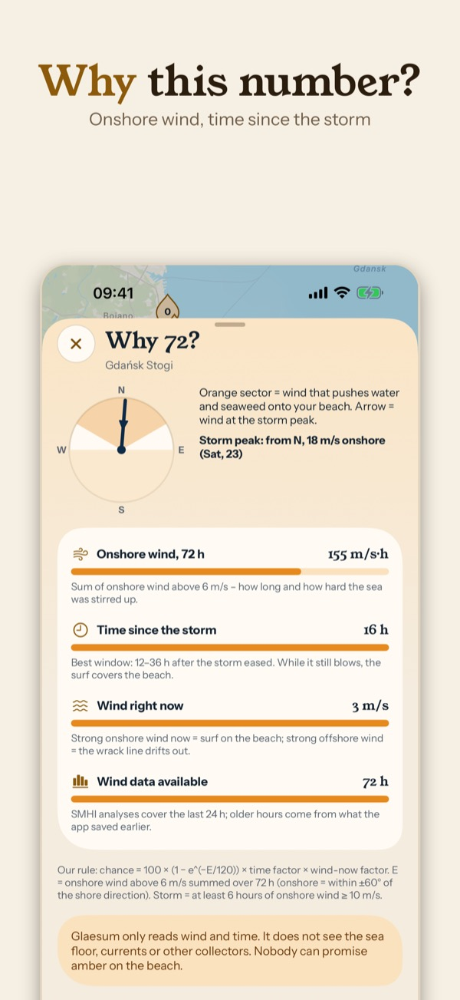
Glaesum helps amber collectors on the Baltic and North Sea pick the right day and the right beach. For 120 beaches in Poland, Germany, Lithuania, Latvia, Denmark and Sweden we know which way the shore faces. From the wind of the last hours and the forecast we work out how long and how hard the wind blew onshore and how many hours have passed since the storm – shown as an amber drop from 0 to 100.
• 0–100 chance for your beach, today and for up to 5 days • 72-hour strip: drag to see when the wind blew onshore • Best hours of the day and the “why” behind the number • Mandatory safety card: white phosphorus looks like amber • Salt-water and UV torch test, step by step • A local notification the evening before a good day • Private find log on your device: weight, size, colour, photo, conditions • Your own beaches with shore direction
Free: today and tomorrow for your beach, the white-phosphorus guide, the test guide and 10 finds in the log. Glaesum Plus is a one-time purchase – no subscription: 5-day outlook for all 120 beaches, the good-day notification, up to 10 own beaches and an unlimited find log. No ads, no account.
Wind data: SMHI open data (CC BY 4.0), processed by Glaesum. The chance is an estimate from wind data using our own rule – nobody can promise finds. Never put finds in your pocket; suspicious lumps can be white phosphorus. Location only while you use the app.